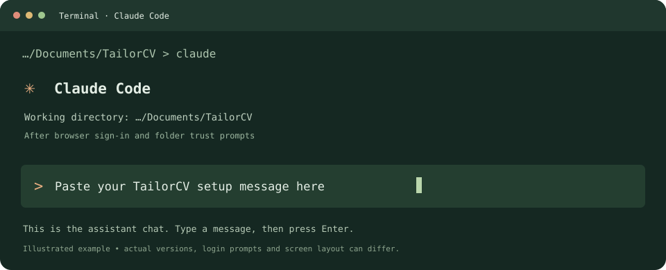

Node.js
22.13 or newerGet the current LTS release for your operating system and complete its installer. Reopen the terminal afterward.
Official Node.js download ↗Start Claude Code or Codex, give it the project link, and let it guide the setup. Then add your master resume and paste a whole job posting.
TailorCV is free and open source. Claude Code or Codex is your AI assistant; its account access, usage limits and any charges are separate. You only need one of them.
Choose the instructions you need. No account details are entered on this page.
Choose either Claude Code or Codex. You don't need both. Already installed? Go straight to launching it.
Claude Code needs supported subscription, Console/API or organization access. Check Claude's current account options ↗
Use a ChatGPT account with Codex access, or another supported account route. Check Codex access and installation ↗
Open PowerShell from the Windows Start menu. Paste this installation command and press Enter.
Open Terminal from Applications → Utilities. Paste this installation command and press Enter.
Open your terminal app. Paste this installation command and press Enter.
irm https://claude.ai/install.ps1 | iexWait for the installer to finish, then close and reopen the terminal. These native installers don't require Node.js first; the assistant will check TailorCV's tools in step 3.
Make an empty folder for your work, for example Documents → TailorCV. Open a terminal inside it. If you already downloaded the project, open its existing folder instead.
In Terminal, type cd with a space, drag your TailorCV folder into the window, then press Enter.
Open your TailorCV folder in the file manager and choose Open in Terminal, or use cd followed by its path.
Now type just this command and press Enter:
claudeOn first launch, follow the browser login prompts using your eligible Claude account. Return to the terminal and complete any folder trust prompts.
On first launch, choose Sign in with ChatGPT and finish browser sign-in. Return to the terminal and complete any folder/access prompts.

claude --version only prints a version number; it does not open the chat. Use the single launch command above to start.
If you installed through npm on Windows and PowerShell blocks codex.ps1, try codex.cmd to launch. codex.cmd --version still only checks the version. Native installs normally use codex.
If the command isn't recognized, reopen the terminal after installation and follow the selected assistant's official install instructions. Already using a desktop/editor agent? Open the local folder and ensure it can read files and run local commands.
You don't need to clone the repo or run setup commands yourself first. With local file, terminal and network access, the assistant can get the project and check the required tools. It will guide you when a login, permission or manual install is needed.
Set up TailorCV for me from: https://github.com/niteshjainy/tailorcv Use this folder if the project is already here; otherwise get the repo in a new tailorcv subfolder. If Git isn't available, use the project ZIP. Read AGENTS.md, CLAUDE.md, LESSONS.md and kit/FORMAT_SPEC.md. Check Node.js 22.13+ and LibreOffice. Install what's missing where permitted; if I must do a manual step, explain it and wait for me. Run setup and doctor. Then guide me to add my master resume. Tell me the full local resume/source/ path and wait until I've added my PDF/DOCX, or use a readable master file path I give you. Don't use the fictional example as my resume. Preserve my original file and extract its actual design. Keep maxPages auto and show the professional summary only once.
“The project is ready. Please put your master PDF or DOCX in …/tailorcv/resume/source/, then reply Done. Or give me the full path to your existing file.”
The exact reply depends on what is installed. Login and installation permissions remain yours to complete; a repo link alone doesn't guarantee an unattended setup.
The assistant can tell you which tool is missing. These are the two free tools TailorCV needs:
Get the current LTS release for your operating system and complete its installer. Reopen the terminal afterward.
Official Node.js download ↗Download the Windows installer, select Typical → Install → Finish.
Download for Apple Silicon or Intel, open the .dmg and drag LibreOffice into Applications.
Use your distribution's software manager. The assistant can give you the right package command.
Official LibreOffice download ↗Once installed, return to the assistant and say “Done—continue the setup.”
Use Code → Download ZIP on GitHub, extract it, then open the folder containing package.json in your assistant. Paste the same setup message; it will reuse that local project.
The same HTTPS link can be opened from GitHub, this guide or a LinkedIn post. Readers need access while the repository is private; make it public before sharing broadly.
Use a selectable-text PDF or Word .docx as your master. The agent saves its content and design for future jobs.
Copy your file into the resume → source folder the agent names, then reply “Done, I've added my master resume.” Any filename is fine; the one above is an example.
You can give the assistant its full file path instead. For example:
My master resume is at: C:\Users\YourName\Downloads\MyResume.pdf Copy it into the project's resume/source/ folder without changing or moving the original. If that path isn't accessible, tell me where to copy the file manually.
On the job site, copy the whole posting page text—company name, role, location, description, requirements and everything around it. Paste it into your assistant. It will identify the target job and ignore menus, cookie text and unrelated page clutter.
You don't need a separate company-name field. Pasted text works even when the original page needs a login. If you use Select All, first make sure you are on the individual job's page rather than a list of many jobs.
Tailor my resume for the job in the page text below. Use my saved master content and design. Identify the company, role and job requirements yourself; ignore navigation, cookie notices and unrelated recommended jobs. Follow the project instructions and build the PDF. Full job-posting page text: <paste all the copied text from the individual job page here>
If multiple roles are equally plausible in the pasted text, the assistant may ask which one you mean. Otherwise, it should take care of extracting the JD itself.
If asked about pages: say “Keep it to one page” or “Two pages are fine.” Your master sets the starting limit; two pages aren't forced.
Open the PDF in File Explorer or Finder. Check the layout/contact details and any estimated numbers the agent reports.
To keep two applications for the same company, tell the agent to use distinct labels such as Acme_UI and Acme_Platform.
For an installation error, copy the exact message into your assistant. It can guide the fix. Official references: Claude Code · Codex · Node.js · LibreOffice.
Your master and generated files stay git-ignored locally; content you share with the assistant goes to its AI provider. Complex or scanned master documents may need extra handling.
If your tailored PDF has the wrong spacing, missing sections, font, columns, photo, chips or other design details, paste this prompt into the same Claude Code or Codex project. You do not need to diagnose the problem. The agent should compare your master with its latest result, fix the reusable layout system, regenerate, and check again.
Calibrate TailorCV to my enrolled master resume. Compare the original master PDF/DOCX and the latest tailored PDF visually, page by page, and inspect their extracted text and build/audit reports. Find every mismatch yourself: page geometry, font family/weight/size, colors, header, columns, photo/graphics, separators, section order, chips, bullets, indents, dates, line wrapping, vertical rhythm, unwanted gaps, overflow, missing sections, duplicated text, and unreadable or non-searchable text. Fix the reusable design extraction, renderer, calibration, audit, tests, and agent instructions as needed. Use my enrolled master as the one design source for all future JDs. Keep personal facts and locked content unchanged; tailor only allowed resume content and do not invent metrics or experience. Keep text selectable/searchable and use the approved Word-to-LibreOffice PDF pipeline. Do not shrink fonts/margins, delete provenance, disable audits, loosen thresholds, or hide failures to force a pass. If the renderer cannot represent a master feature, implement support for it. After each code change, regenerate this tailored resume, render every page, compare it with the master, inspect the audit and PDF text, and fix newly revealed defects. Repeat the inspect → fix → render → compare cycle without asking me to diagnose layout issues. Test at least one different JD with the same master to confirm the fix is reusable. Stop only when the result is readable, original design features and sections are retained, there are no accidental gaps/overlaps/clipping, text is searchable, lint passes, and both the measured audit and visual review pass. Keep the audit honest; style-check percentages are not pixel accuracy. Save the final PDF and an HTML side-by-side comparison report. If I paste this prompt again, continue from the latest result and keep fixing remaining mismatches. Do not restart from defaults or overwrite my enrolled design.
You can paste this prompt again after reviewing a result. Repeating it means continue improving the same enrolled design, not start over.